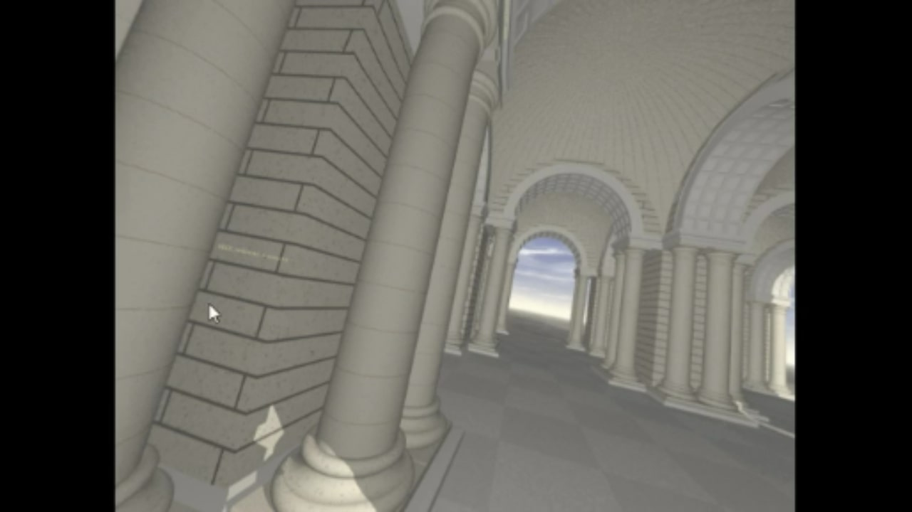
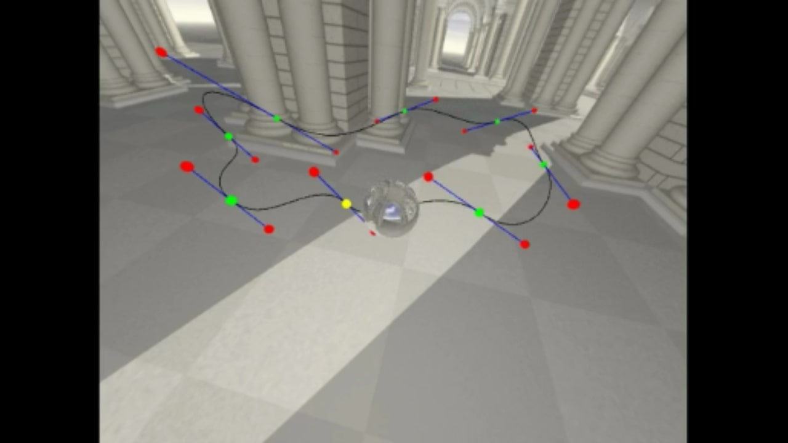
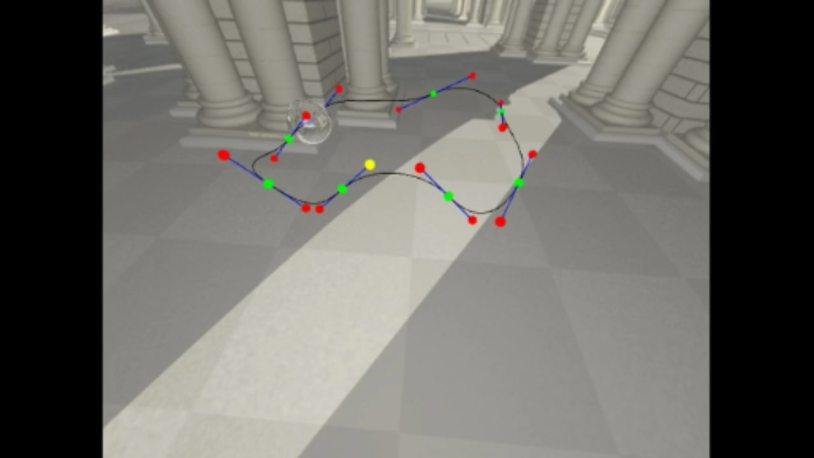
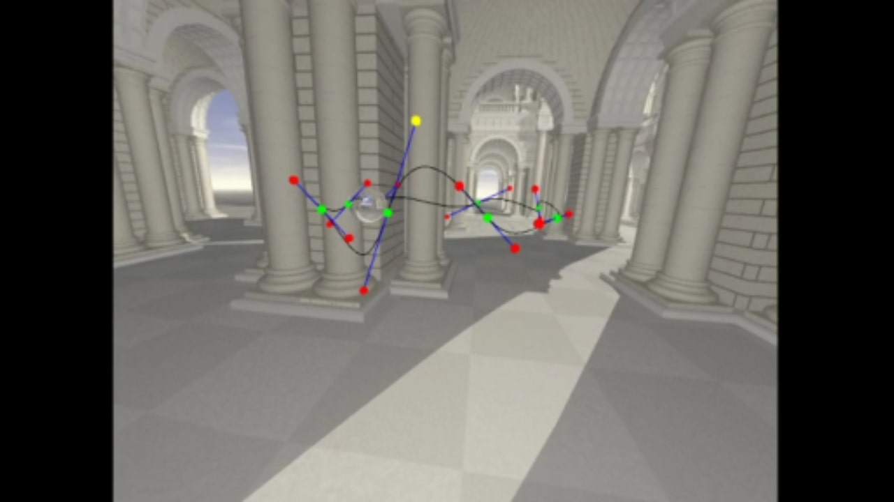

Roller Coaster
C++ OpenGLThis project was the fourth solo assignment for UCSD's Introduction to Computer Graphics class. It involved implementing a skybox, environmental mapping, and C1 continuous Bezier curves.




Goals for this Project:
Project Rubric and Directions- Draw a skybox.
- Create 8 Bezier curves to render a roller coaster track.
- Render spheres to represent the locations of the control points, highlighting the interpolating points and the anchor points in different colors.
- Enforce C1 continuity for neighboring curves.
- Render a sphere on the track to represent a roller coaster car. Use environment mapping to make the sphere look like polished metal.
- Move the sphere along the track.
Keyboard Controls:
- p: Freeze/unfreeze the animation
- x: Change the value of the x coordinate of the selected control point
- y: Change the value of the y coordinate of the selected control point
- z: Change the value of the x coordinate of the selected control point
- Up Arrow: Decrease the FOV (zoom in)
- Down Arrow: Increase the FOV (zoom out)
- Left Arrow: Go to the previous control point
- Right Arrow: Go to the next control point
Mouse Controls:
- Hold the left mouse button and move the cursor to rotate the the camera in place.
- Hold the right mouse button and move the cursor to rotate the camera around the center of the world.